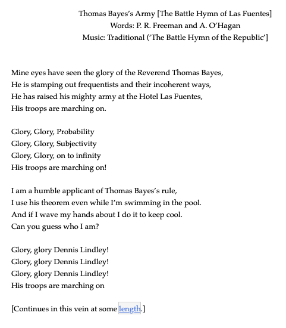

Example: Subsetting
Consider the months of the year
\[M = \{\text{Jan, Feb, Mar, Apr, May, Jun, Jul, Aug, Sep, Oct, Nov, Dec} \}\]
Let us say that a month is ``long’’ if it has 31 days. What is the probability that we have a long month given that we are in the Fall semester?
\[F = \{ \text{Aug, Sep, Oct, Nov, Dec} \}\]
Conditional Probability
We can condense this process into a formula for conditional probability:
The conditional probability of observing event \(A\) given event \(B\) has already taken place is
\[P(A|B) = \displaystyle\frac{P(A \cap B)}{P(B)}\]
Example: Contigency Tables
In this hypothetical example, suppose that we are following an epidemiologist who is testing patients at a hospital in for the novel strain of coronavirus.
- Build a contingency table with the following data
- 175 true positives
- 32 false negatives
- 18 false positives
- 2019 true negatives
- Compute the probability that a randomly selected patient is disease free given that the drug test is positive.
Prosecutor’s Fallacy
- Using the same counts as the previous example, compute the probability that for a randomly selected patient the test returns positive given that the patient is disease free.
Converses for conditional probability are almost never equal.
\[P(A|B) \neq P(B|A)\]
Bayes’ Rule
In the previous section, we studied conditional probability
\[P(B|A) = \displaystyle\frac{P(A \text{ and } B)}{P(A)}\]
and we talked about how the inverse probabilities \(P(A|B)\) and \(P(B|A)\) are almost never equal. In this section, we discuss how to properly think and calculate that inverse probability.
Another look at conditional probability is
\[P(A \text{ and } B) = P(B|A) \cdot P(A)\]
This is read as “The probability of the intersection \(A\) and \(B\) is the probability of event \(B\) conditioned on event \(A\).”
Moreover, if we consider how if event \(B\) is dependent on event \(A\), then sometimes \(B\) happens when \(A\) happens and sometimes when \(A\) does not occur. More succinctly, the total probability of event \(B\) is
\[P(B) = P(B|A) \cdot P(A) + P(B|A^{c}) \cdot P(A^{c})\]
Staring with the conditional probability formula
\[P(B|A) = \displaystyle\frac{P(A \text{ and } B)}{P(A)}\]
Bayes’ Rule combines the ideas of conditioned probability and total probability as
\[P(A|B) = \displaystyle\frac{P(A \text{ and } B)}{P(B)} = \displaystyle\frac{P(B|A) \cdot P(A)}{P(B|A) \cdot P(A) + P(B|A^{c}) \cdot P(A^{c})}\]
A Deep Dive
An executive has their blood tested for boneitis. Let \(B\) be the event that an executive has the disease, and let \(T\) be the event that the test returns positive. Laboratory trials yielded the following information:
\[P(T|B) = 0.70 \quad\text{and}\quad P(T|B^{c}) = 0.10\]
Assume a prior probability of \(P(B) = 0.0032\). Compute \(P(B|T)\)
More Practice
An executive has their blood tested for boneitis. Let \(B\) be the event that an executive has the disease, and let \(T\) be the event that the test returns positive. Laboratory trials yielded the following information:
\[P(T|B) = 0.70 \quad\text{and}\quad P(T|B^{c}) = 0.10\]
Assume a prior probability of \(P(B) = 0.0032\). Compute \(P(B|T^{c})\)
Looking Ahead
due Fri., Sept. 2:
- WHW1
- LHW1
- CLO (survey)
Be mindful of before-lecture quizzes
No discussions next week for Math 32 (Sept. 5-7)
Exam 1 will be on Tues., Sept. 27
